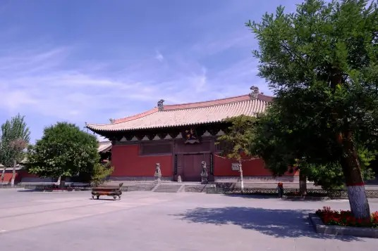

善化古寺 |
返回主页 |  | |
| 善化寺（Shanhua Temple），俗称南寺，位于山西省大同市平城区南寺街6号。据庙碑记载：始建于唐开元年间，称开元寺。五代后晋更名大普恩寺。金代圆满和尚主持重修重建。正统十年（１４４５年）明英宗赐名善化寺，一直沿用至今。 善化寺主要建筑沿中轴线坐北朝南，渐次展开，层层迭高。前为山门，中为三圣殿，均为金时所建。辽代遗构大雄宝殿坐落在后部高台之上，其左右为东西朵殿。东侧为文殊阁遗址，西侧为金贞元二年（1154年）所建普贤阁。除天王殿（山门）、三圣殿、大雄宝殿和普贤阁为辽金建筑外，其余两侧配殿和钟鼓楼为明清时期建筑。寺内保存金代塑像３４尊，清代壁画１９０平方米。明代塑像９尊，金碑２通，明清重修碑３通。善化寺建筑高低错落，主次分明，左右对称，是中国现存规模最大、最为完整的辽金时期建筑。 现为大同市古建筑文物保管所办公所在地。 1961年3月，善化寺被中华人民共和国国务院公布为第一批全国重点文物保护单位。 | |||